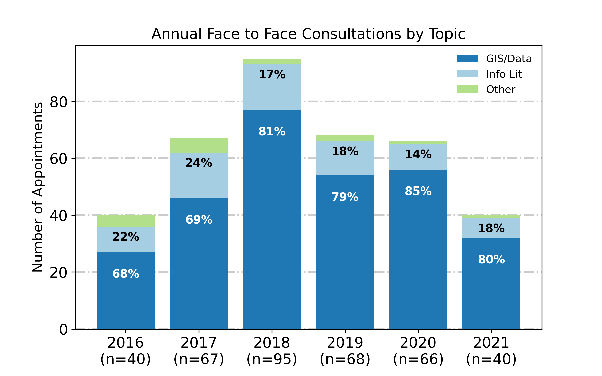
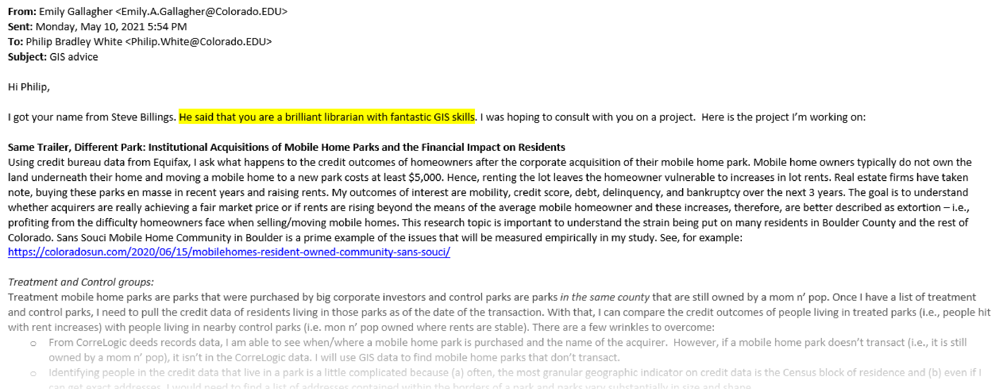
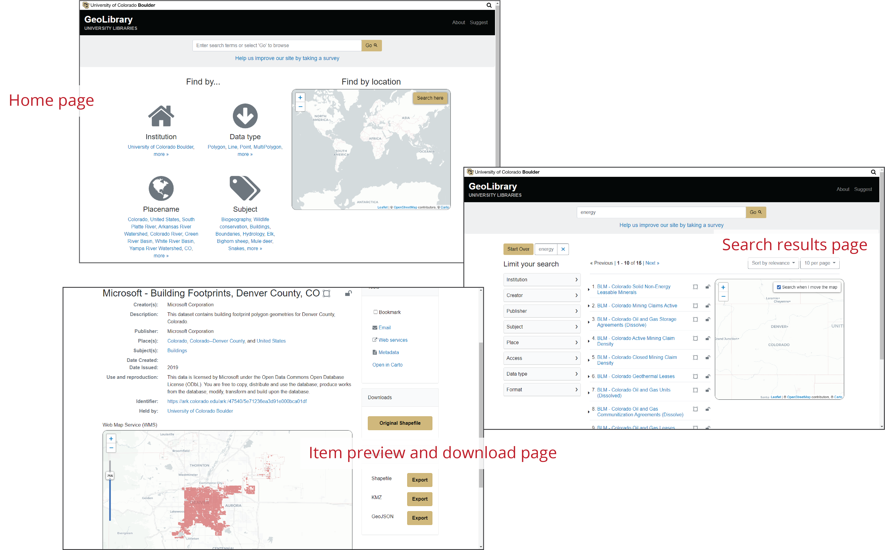

Philip B. White
Earth, Environment & Geospatial Librarian
1. Consultative Services
2. Innovative Instruction
3. Geospatial Data Access
I typically have 30–40 face-to-face consultations with students or faculty per semester.
Most consultations either stem from students scheduling follow-up appointments with me following a class visit or by people who find my scheduling app on one of my library guides.
My consultations fall into the following topical categories:
Consultative Services Content Breakdown
Note: Data from 2016 and 2021 represent 5 months of consultations. All other years represent 12 months.
My consultative support impacts research at the University at a high level. Owing to my geospatial expertise, I am able to advise students and faculty through highly technical questions about finding and using geospatial data.
A selection of student/faculty questions from Spring 2021:
"I am working on a massive geocoding and spatial merging to census geographies (~75 million addresses) project and need some advice. I have done small batch geocoding easily with census geocoder using R previously but by my calculations this would take >100 days on my computer to do a job this big... Do you have any time this week to chat about best strategies for this...?" (Faculty Member)
A selection of student/faculty questions from Spring 2021: (cont.)
"My project involves using satellite imagery (preferably NAIP) to identify areas where piñon-juniper trees are expanding into sagebrush habitats in northwest Colorado. The methodology I'm hoping to use involves using false color settings to identify conifer trees, and I'm having trouble finding 4-band NAIP imagery in order to use the false color settings. All of the NAIP imagery I've downloaded just has RGB, no near-infrared. I'm hoping you can help me find high-resolution 4-band imagery to use" (Undergraduate)
A selection of student/faculty questions from Spring 2021: (cont.)
"I'm in the GIS for Geologists class with Brian Hynek, we met earlier in the semester to find prairie data and VERY old census data. I was able to find old census data, but I'm having a hard time actually using it. I have it all in a series of excel files, but I can't seem to make a table with actual attributes that ArcMap can read. I'm trying to join tables to a US counties layer I have, but the layers refuse to relate and fields come out as null. I could really use some help or advice as nothing on the internet seems to point me in the right direction. Any suggestions? I'm making an appointment with you for Monday but I'm really worried my data is unusable. If that's the case, I'm not sure what to do." (Undergraduate)
Many students and faculty find me via word of mouth.
In addition to course integrated instruction, I teach 5 to 7 workshops each semester in the Center for Research Data and Digital Scholarship.
My workshop topics include conceptual and functional training in topics such as:
These workshops are often taught collaboratively with CRDDS colleagues including Digital Scholarship Librarian Nickoal Eichmann-Kalwara, former GIS Postdoc Alicia Cowart, and Data Librarian Aditya Ranganath.
Owing to the technical nature of these workshops, I began to look for ways to lower barriers of entry many people might percieve about GIS and coding.
This led me to move all workshop documentation to a website hosted on GitHub, which was particularly useful during the COVID-19 pandemic.
Geospatial Workshop Series Website and Documentation
Click to interact, or view full site here: https://cu-boulder-crdds.github.io/GIS-workshops.
I also worked with colleagues in Research Computing to provide a cloud instance of JupyterHub for Python instruction.
Leading programming lessons on a JupyterHub allows everyone to access the same computer over the web, eliminating the need for attendees to set up complicated coding environments on their personal computers prior to the workshop.
An example Jupyter Notebook used for a Python-based GIS workshop
When combind with a JupyterHub, teaching Python in a notebook environment provides annotated, step-by-step instructions with minimal set-up.
Noticing a need for a centralized location for Colorado geospatial data, I began work toward creating a geospatial data platform for the libraries in 2017.
The Colorado GeoLibrary (geo.colorado.edu) launched in 2019 with a collection of Colorado themed geospatial data sets.
The GeoLibrary started small but now has nearly 400 data sets and averaged 376 unique users per month during the spring 2021 semester.
The Colorado GeoLibrary geospatial data portal
View full site at: geo.colorado.edu.
Usability tests were conducted on the GeoLibrary in Spring of 2021, yielding useful constructive comments for future improvements.
Here are a few positive comments from some students and professionals that participated:
"It's super user friendly even if you're not a GIS person. I like on the results page these dropdowns that help you narrow your search criteria. Overall it's user friendly and a helpful resource for sure." (Undergraduate)
Positive comments from some usability testing (cont.):
"I like the cleanliness of the home page. It's very inviting and I feel like I can throw something in the search bar and see what happens. I don't feel like I'll have to learn the site, I'll be able to move through it and figure it out as I go." (Graduate student)
Positive comments from some usability testing (cont.):
"I've never actually seen a GIS data [site] that looks like this and I do like the look of it. I think it's very intuitive, especially after spending too much time on the census website."
(GIS specialist)
Development of the GeoLibrary was a collaboration between myself, Libraries IT, Libraries Metadata, and others. Many people deserve credit for launching this important service to our University and state.
A priority of my post-tenure period is to expand the GeoLibrary into a multi-institutional collaboration with other area colleges and universities.
These slides represent my most impactful work at the University Libraries, but it is only a slice of all of my unique contributions.
Please take a look at my GitHub repository "justsomescripts" to view miscellaneous Python scripts I've written to automate geospatial and library tasks for both myself as well as for colleagues in the University Libraries and elsewhere: github.com/outpw/justsomescripts
Philip B. White
Earth, Environment & Geospatial Librarian
University of Colorado Boulder